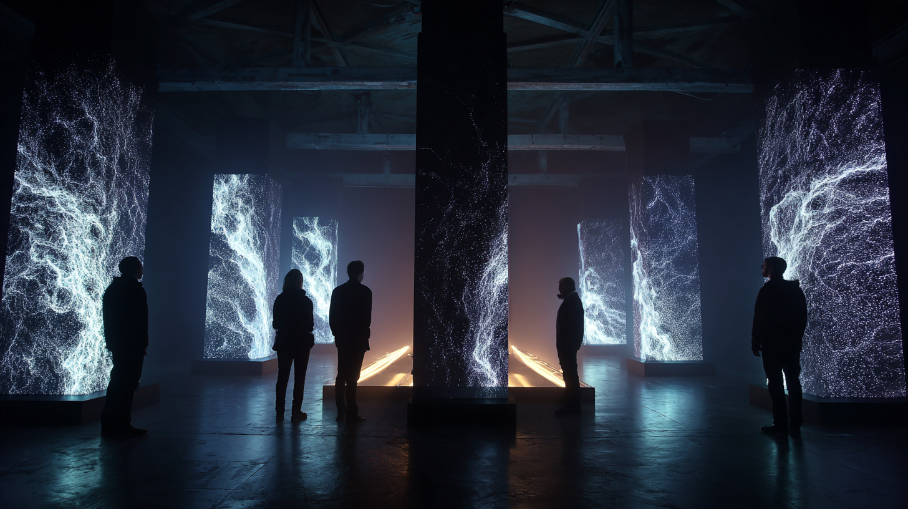
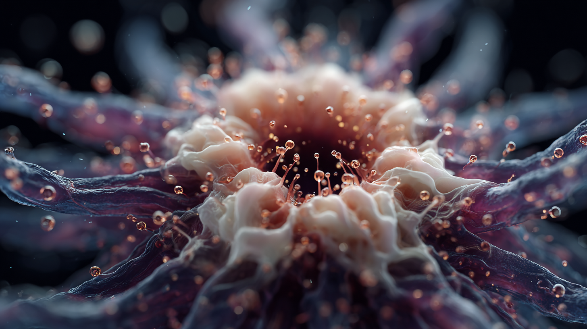
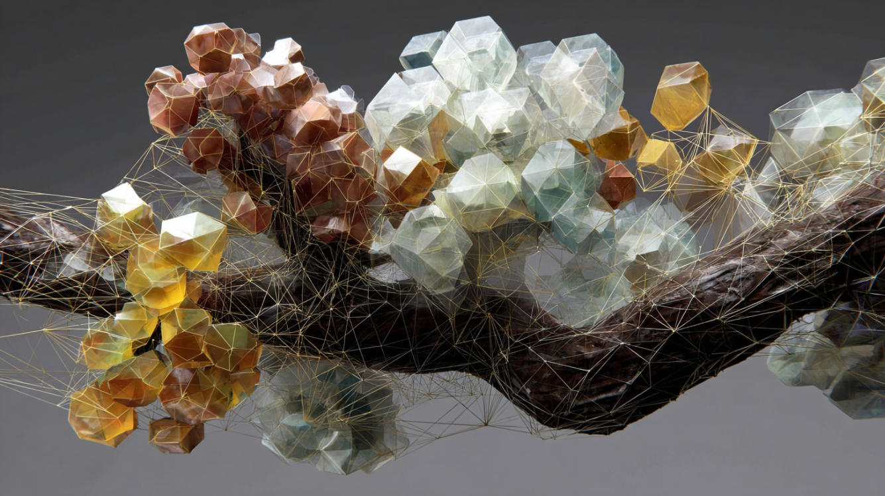
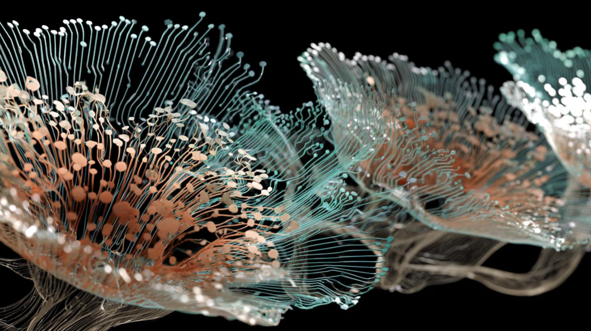
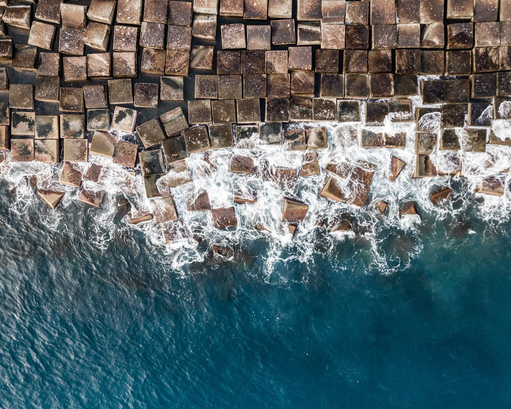
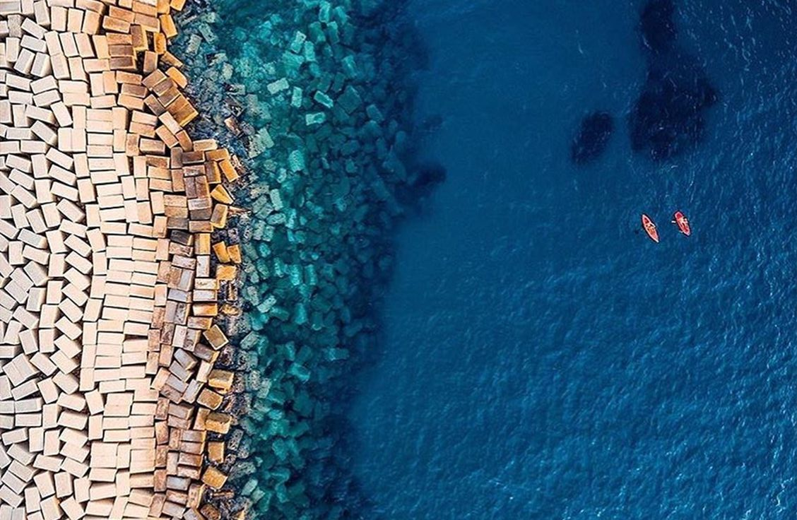

"Technology is nature too..."
A live immersive experience where code and ecosystem merge into a single pulse. NATURIS invites us to reconnect the human, the digital, and the organic in one continuous flow of balance and evolution.
by Jorge Tereso, Federico Carlini and Fernando Maldonado


Room 1


"Let go and fall"
Immersive Experience
- Gravity is reversed: the human world collapses while nature holds its ground.
- Falling objects reveal a fragile dependence on space and balance.
- Two realities mirror each other, exposing how existence relies on context.

Room 2


"All is connected"

Immersive Experience
- Bodies react subtly to the presence of others.
- Invisible networks expand through proximity and contact.
- A living system emerges, where each movement affects the whole.
Room 3


"Blind shapes"



Immersive Experience
- Different speeds coexist within a shared temporal field.
- Movements align without awareness, guided by a common rhythm.
- Time stretches and compresses, revealing an underlying synchronization.
Room 4

"Traces of the footprints"


Immersive Experience
- Human paths echo the logic of natural growth.
- Movements across land resemble data flowing through networks.
- Territory becomes a record of shared behaviors between life and systems.